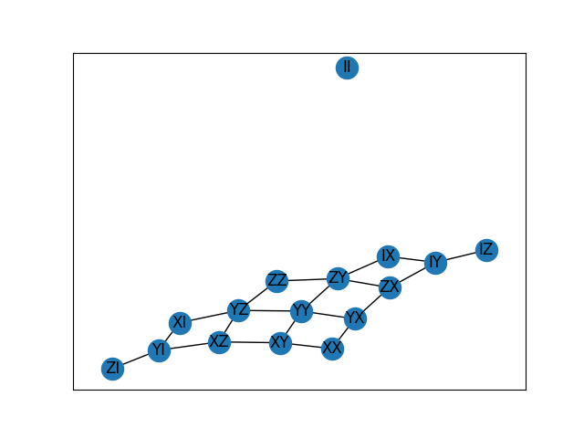

Commutator graph#
This tutorial will illustrate how to use paulie to analyse short term dynamics of quantum systems.
The Hamiltonian of the system is described by a linear combination of Pauli strings \(H = \sum_{P \in \mathcal{G}} c_P P\) where
\(\mathcal{G}\) is the generator set. The commutator graph of an \(n\)-qubit system has the \(4^n\) Pauli strings as
vertices and there exists and edge \((P,Q)\) if there exists a generator \(G \in \mathcal{G}\) s.t.
\([P,G] \propto Q\).
We can plot the commutator graph
from paulie import get_pauli_string as p
generators = p(["XI", "ZI", "IX", "IZ", "ZZ"], n=2)
vertices, edges = generators.get_commutator_graph()
plot_graph(vertices, edges)

While the anticommutation graph is isomorphic for generator sets with isomorphic DLA’s and only capture the long term dynamics, the commutator graph captures the short term dynamics (see West et al. [2025]). In particular, we can determine how chaotic the system behaves. A quantifier of quantum chaos is the the out-of-time-order correlator (OTOC) between two unitary operators \(W\) and \(V\) defined as
where \(d\) is the total Hilbert space dimension. For two initially commuting operators, the OTOC is equal to one.
If we Heisenberg-evolve one of the operators under some dynamics as \(V_t = U^{\dagger}VU\) where \(U=e^{-iHt}\), the operators \(W\) and \(V_t\) begin to fail to commute as the operator \(V_t\) becomes global under the dynamics. The exponential decay of the OTOC \(F(W, V_t)\) with time is a probe of quantum choas.
Given a Pauli string dynamical Lie algebra (DLA), we can compute the average OTOC between two Pauli strings where the Heisenberg-evolution is averaged over the dynamics using the function average_otoc:
import numpy as np
from paulie import average_otoc, get_pauli_string as p
# These are the generators of n=3 "matchgate" dynamics
generators = p(["ZII", "IZI", "IIZ", "XXI", "IXX"])
v = p("XYZ")
w = p("YZZ")
print(f"Do {v} and {w} initially commute?", v.commutes_with(w))
print("Average OTOC of {v} and {w} under matchgate dynamics:", np.round(average_otoc(generators, v, w), 3))
which outputs:
Do XYZ and YZZ initially commute? True
Average OTOC of {v} and {w} under matchgate dynamics: -0.333
As we can see, two initially commuting operators may fail to commute after Heisenberg-evolution under some dynamics.